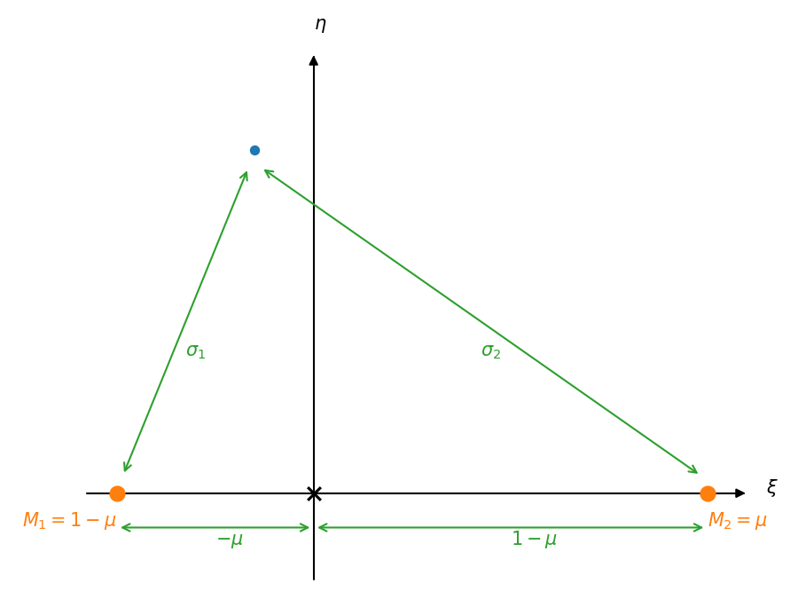

Equipotentials#
Consider a binary system consisting of two stars with masses \(M_1\) and \(M_2\). We’ll assume that \(M_2 < M_1\).
In the corotating frame, the total potential (gravitational and centrifugal) is:
where \(s_1\) and \(s_2\) are the distances from masses 1 and 2 to a test mass \(m\), and we place the center of mass of the system at the coordinate origin. This appears as:
Here we write the distance of mass 1 to the center of mass as \(a_1\) and that of mass 2 to the center of mass as \(a_2\).
We can get the rotation frequency from Kepler’s laws, and it is :
This allows us to rewrite our potential as:
We now make this dimensionless. We scale the masses by the total masses of the system, giving:
This gives the center of mass condition:
or
Now we scale the lengths by the orbital separation, \(a_1 + a_2\), giving the dimensionless potential
where the dimensionless lengths are:
The system with these new scalings appears as:

From the diagram above, we see:
We can now plot this potential.
import numpy as np
import matplotlib.pyplot as plt
from scipy import optimize
Implementation#
Here’s our implementation. We include a method to find the 3 Lagrange points along the \(x\)-axis. This is done via a minimization routine from SciPy (we minimize \(-f\)).
class Equipotential:
"""the general setup is two stars on the x-axis. M_1 is the more
massive and is at x = -a_1. M_2 is the less massive and is at
x = + a_2.
center of mass tells us that: M_1 a_1 = M_2 a_2
we work in mass units of (M_1 + M_2), and distance units of
(a_1 + a_2)
here mu is the mass parameter, which we can think of as
mu = M_2 / (M_1 + M_2).
mu = 1/2 is equal mass, but in general, with M_1 > M_2, mu
will be less than 1/2.
"""
def __init__(self, q):
"""
Define an equipotential problem.
q is the mass ratio, q = M_2 / M_1 < 1
"""
self.q = q
self.mu = q / (1.0 + q)
def f(self, xi, eta):
"""Compute the dimensionless potential"""
sigma_1 = np.sqrt((xi + self.mu)**2 + eta**2)
sigma_2 = np.sqrt((xi - (1 - self.mu))**2 + eta**2)
return -(1 - self.mu) / sigma_1 - self.mu / sigma_2 - 0.5 * (xi**2 + eta**2)
def get_l1(self):
"""return the xi coordinate of the L1 point"""
# since M_1 > M_2, we expect the L1 point to be closer to M2, so we'll
# search from [-eps, 1-mu]. Also, we need to minimize -f
res = optimize.minimize_scalar(lambda xi: -self.f(xi, 0), method="bounded", bounds=[-0.001*self.mu, 1-self.mu])
return res.x
def get_l2(self):
"""return the xi coordinate of the L2 point"""
# L2 is on the other side of the smaller mass from the center of mass.
# For us, the smaller mass is M_2 which is at xi = + (1 - mu), so we
# search beyond that. Also, we need to minimize -f
res = optimize.minimize_scalar(lambda xi: -self.f(xi, 0), method="bounded", bounds=[1-self.mu, 10*self.mu])
return res.x
def get_l3(self):
"""return the xi coordinate of the L3 point"""
# L3 is on the other side of the larger mass from the center of mass.
# For us, the smaller mass is M_1 which is at xi = - mu, so we
# search beyond that. Also, we need to minimize -f
res = optimize.minimize_scalar(lambda xi: -self.f(xi, 0), method="bounded", bounds=[-10*self.mu, -self.mu])
return res.x
def plot(self, *, xi_min=-2.0, xi_max=2.0, eta_min=-2.0, eta_max=2.0, N=128):
"""plot the equipotentials"""
_xi = np.linspace(xi_min, xi_max, N)
_eta = np.linspace(eta_min, eta_max, N)
xi, eta = np.meshgrid(_xi, _eta)
V = np.abs(self.f(xi, eta))
V_median = np.median(V)
fig, ax = plt.subplots()
ax.imshow(np.log10(V), origin="lower", cmap="YlGnBu",
extent=[xi_min, xi_max, eta_min, eta_max],
vmax=V_median)
# some reference contours
Vmin = 1.5
Vmax = 100.0
nC = 20
C = np.logspace(np.log10(Vmin), np.log10(Vmax), nC)
ax.contour(xi, eta, V, C, colors="0.5")
# plot the Lagrange points
xi1 = self.get_l1()
xi2 = self.get_l2()
xi3 = self.get_l3()
# special contours that go through the Lagrange points
ax.contour(xi, eta, V,
[np.abs(self.f(xi1, 0))], colors="0.5", linestyles=":")
ax.contour(xi, eta, V,
[np.abs(self.f(xi2, 0))], colors="0.5", linestyles=":")
ax.contour(xi, eta, V,
[np.abs(self.f(xi3, 0))], colors="0.5", linestyles=":")
ax.scatter([xi1, xi2, xi3], [0, 0, 0], color="C1", marker="x")
ax.set_xlabel(r"$x / (a_1 + a_2)$")
ax.set_ylabel(r"$y / (a_1 + a_2)$")
return fig
## Exploring the equipotentials
Let’s create a system with a mass ratio \(q = 1/2\)
e = Equipotential(0.5)
fig = e.plot(N=512)

Now let’s look at a slice along the \(x\)-axis to see the structure.
xi = np.linspace(-2, 2, 128)
fig, ax = plt.subplots()
ax.plot(xi, e.f(xi, 0))
ax.set_ylim(-10, 0)
ax.scatter([e.get_l1(), e.get_l2(), e.get_l3()],
[e.f(e.get_l1(), 0), e.f(e.get_l2(), 0), e.f(e.get_l3(), 0)],
color="C1", marker="x")
<matplotlib.collections.PathCollection at 0x7f073309d3f0>